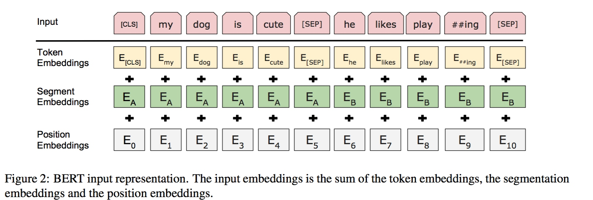
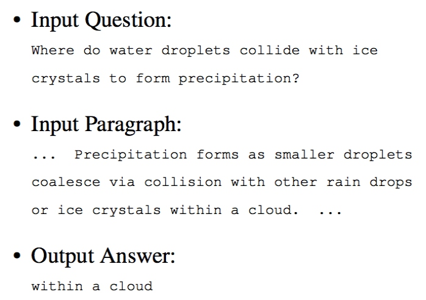
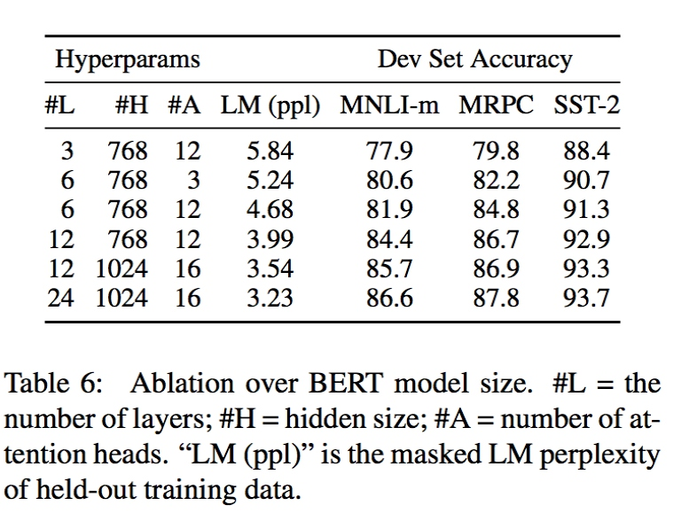

该论文介绍了一种新的语言表征模型BERT，Bidirectional Encoder Representations from Transformers。以往的语言模型往往都只关注单向的生成过程，而在BERT中所有层都会同时考虑正向和反向两个方向的语义，从而对语义的建模更完善。 作者在论文中展示了BERT对NLP语义强大的表征能力，对于预训练很完善的模型，针对不同的任务，模型只需要稍加修改然后经过网络微调就可以达到媲美甚至超越SOTA的表现了。基于此，BERT刷新了11项NLP任务的SOTA，在GLUE任务和MultiNLI任务上提升尤其明显，在SQuAD问答数据集上甚至超越了人类的表现。 本文作为自己学习BERT的笔记，结合git上的google开源的代码简要介绍一下BERT的概念，代码实现及其应用。
1. 简介
近年来，预训练语言模型在NLP任务上发挥着越来越重要的作用，尤其是对于很多标记数据不足的场景。通过使用大量未标记的文本数据训练一个好的语言模型，再进行迁移学习通常会明显改善模型的表现。
从早期的神经网络语言模型，到Word2Vec，再到近年来RNN相关的语言模型ELMo，再带基于去年google发布的Transformer模型的语言模型OpenAI GPT。语言模型的种类很多，但是大致在应用上有两种方案：
第一种是feature-based的，例如ELMo，这种方案里预训练模型通常只是作为一个特征补充的方案，模型的结构还是得按照具体的任务来定。而另一种是fine-tuning的方式，例如OpenAI GPT，在这种方案里，模型的参数基本是与任务无关的，预训练做好后，针对特定的任务只要对模型进行微调就好了。在以前的方法里，这些预训练都是基于同样的损失函数: 序列的交叉熵损失，而且学到也都是单向的语言生成模型。
单向语言模型严重制约了预训练模型的表征能力，本文提出的BERT模型通过使用新的训练目标“Masked Language Model”(MLM)来解决单向语言模型的局限性。MLM将随机选择输入中的某些词作为masked词，然后基于其上下文来预测这个masked词。不像之前的从左到右的预训练模型，MLM允许我们融合左语境和右语境，来训练一个双向的深度Transformer模型。除此之外，本文还引入了另外一个简单的预测任务来预测两个句子是否匹配关系。
论文主要贡献为：
- 验证了双向预训练对于语言表征的重要性
- 展示了预训练可以减轻很多繁重的基于特定任务结构设计问题。BERT是首个在sentence级别和token级别都刷新SOTA成绩的基于fine-tuning的表征模型
- BERT刷新了11项NLP任务记录。模型的双向特征是BERT最重要的一个贡献。
2. 相关工作
简单介绍一下预训练语言表征的发展历史。
2.1 Feature-based方法
基于特征的方法通常是用来获取预训练embedding向量的，训练好的embedding相对于随机初始化的embedding来说，通常会显著提高相关NLP模型的表现，尤其是在标注数据缺乏的情况。这种方法也被延伸到获取sentence和paragraph的embedding。
2.2 Fine-tuning方法
从语言模型迁移学习的最近趋势是采用预训练相同结构的无监督模型，在实际任务的时候根据监督模型的数据对模型进行网络微调。这种方法的特点是，对于预训练好的模型，后续的调整很少，模型训练很快。
2.3 利用标记数据进行迁移学习
通常来说，无监督预训练的一大好处是数据量的充足，就那NLP来说，纯文本内容例如用户评论简直是要多少有多少。但是对于有监督学习来说，很多研究表明一个好的无监督预训练然后再进行迁移学习同样可以提升有监督学习的模型表现。
3. BERT
终于到本文的重点，BERT模型的具体介绍了。这里详细介绍一下BERT的模型结构和输入表示。然后也介绍了模型的预训练过程，和训练好之后在不同NLP任务上的fine tuning的过程。最后再比较了一下BERT和OpenAO GPT的区别。
3.1 模型结构
BERT模型是一个双向多层的TransformerEncoder模型，Transformer的介绍可以参考之前的文章，这里不详细介绍了。下面的结构中，L表示Transformer的层数，H表示隐藏层单元数，A表示多头self-attention的个数。然后所有的前向全联接的维度为4H。测试了两种模型大小的表现
- BERT_Base: L=12, H=768, A=12, 总参数量110M
- BERT_LARGE: L=24, H=1024, A=16, 总参数量340M
作为对比，BERT_Base模型使用的参数量和OpenAI GPT模型相当。不同的地方在于BERT采用的双向的Transformer，而OpenAI GPT采用的是单向的Transformer。双向的通常被成为Encoder版本的Transformer，而从左到有单向的被称为Decoder，因为对于某个字而言，只有左边的上文是“可见”的，可以被用作文本生成。BERT，OpenAI GPT和ELMo的模型对比如下图：
3.2 输入表示
BERT模型既可以以单个句子为输入，也可以处理类似问答系统这样的两个句子的情形。对于一个token，它的输入表示为所有对应的token，segment，position的embedding之和，如下图：

具体而言：
- 使用了包括WordPiece的30000个token的词表。对于分开的word piece用##表示
- 支持最大长度为512token序列的位置embedding
- 每句话的第一个token都被置为[CLS], 是一个特殊的embedding。对于分类问题来说，这个token的embedding就作为序列整体的表示。对于非分类问题，这个embedding被忽略
- 句子对(eg: 问答任务)的两个句子被链接在一个序列中。两个句子的区分在于：首先用[SEP]分隔符将两句话分开，其次定义两个特殊的segment embedding，E[A]和E[B]，分别代表A句和B句的每个token
- 对于单句输入，只考虑句子A的embedding
3.3 预训练任务
不同于传统的训练单向语言模型的方法，BERT创新性地引入了两个训练任务
3.3.1 Task #1: Masked LM
直觉上，深度双向的模型肯定是要比单向的语言模型或者说浅层的语言模型要好。但是传统的单向条件语言模型(根据上文预测下文将出现的字)只能从左到右训练或者从右到左训练。
为了训练一个双向的语言模型，BERT使用了一种不同的方法。类似于完形填空，BERT会随机遮住15%的词来预测这些词，所以是一种masked LM，需要预测的只是被mask的位置上的词，而不需要重现整个句子。
虽然这样做可以让我们得到一个双向的模型，但是也会有两个缺点。首先，我们将遮住的词替换为[Mask]，但是在实际fine-tuning的时候并没有这个token，这就导致预训练和fine-tunining不一致。因此，我们的做法是随机选择15%的token，例如对于my dog is hairy选择了hairy，进行如下操作：
- 80%的情况下将这个词替换为[Mask]
- 10%的情况将这个词替换为一个随机的词
- 10%的情况保持词不变，这个目的是使模型表示适当偏向当前观测值
因为这样的Transformer encoder并不知道具体会预测哪个值，也不知道被遮住的是哪个词，所以对于每个token，他会尽量学习其分布式的语义表示。又因为只有1.5%的token被随机替换，这样的噪声并不会对模型的语言理解能力造成大的影响。
另外一个缺点就是由于每个batch只有15%的token被训练了，模型收敛起来会比传统语言模型更慢。不过相对于BERT对于精度的提升，这点效率损失也可以接收，预训练通常也不需要经常进行。
3.3.2 Task #2: Next Sentence Prediction
许多基于对话问答（QA）或者自然语言推理（NLI）的任务都是基于两句话关系的理解基础上的，而上面的语言模型显然并不能很好的捕捉这种特性。因此这里引入了一个被称为“下一句预测”的简单分类任务，随机从语料中选择句子A和B，其中50%的情况B是A的下一句话。50%的情况B是语料中随机的一句话：
最后的预训练模型对于这个分类问题达到了97%-98%的准确率。尽管这个任务看上去很简单，但是后面可以看到它对QA和NLI任务起到了积极的作用。
3.4 Pre-training过程
使用了BooksCorpus和英文Wiki的语料。为了提取出长的序列，最好使用文档级别的语料而不是句子级别的语料。
然后为了获取训练数据，从语料中采样“两段”文本内容，代表“sentences”，虽然它比语言上定义的实际的句子要长很多或者短很多。第一句使用seg A的embedding，第二句使用seg B的embedding，50%的概率B是A的下一句话，50%的概率B是随机的一句话。两个句子拼接起来的长度小于512个token。得到了这样的数据后，对word piece的token按15%的概率选择进行mask的操作，然后对每个被选择的token按照上文讲的三种方式处理。
训练模型时的一些超参选择如下：
- batch_size 256(256 * 512 = 128000 tokens/batch)
- 共1000000step，40个epoch
- adam，\(\beta_1\)=0.9，\(\beta_2\)=0.999
- L2正则系数0.01
- 学习率前10000个step不变，后面线性减小
- dropout 0.1
- 激活函数使用gelu
3.5 Fine-tuning过程
对于句子分类任务的fine-tuning，做法很简单，就是在前面提到的模型第一个特殊标志符[CLS]的输出上加一层softmax，将H维度映射到K，K表示分类任务的预测类的个数。span-level和token-level的fine-tuning略有不同，在后面介绍具体任务的时候再提。
在fine-tuning过程中，官方给的超参数设置建议是：
- dropout保持0.1
- batch-size使用16，32
- adam学习率5e-5, 3e-5, 2e-5
- epoch 3，4
由于fine-tuning比较快，可以考虑搜索不同超参组合，获得最优值。
3.6 BERT与OpenAI GPT的对比
在BERT中，除了LM和下一句预测这两个创新点外，它和GPT还有一些其他的差别：
- 训练数据不一样，GPT基于BooksCorpus(800M个词)，BERT基于BooksCorpus(800M个词)和Wikipedia(2500M个词)
- GPT只在fine-tuning的过程中引入句子分隔符[SEP]和分类符[CLS]，而BERT在预训练的时候就会学习这些特殊符号(还包括A／B句子区别符号)的embedding表示
- GPT在32000batchsize的基础上训练了1M步，BERT在128000batchsize的基础上训练了1M步
- GPT对于所有的微调试验都是用了固定的5e-5的学习率，BERT针对不同的任务试用了最优的学习率
为了证明BERT带来的效果提升是主要由于两个创新点而不是这些参数不同导致的，在后面google也做了一系列的试验来说明。
4. 试验
Google利用预训练好的BERT模型一共在11个任务通过fine-tuning获得了SOTA的表现。这11个任务可以被归为4种类型，这里介绍一下BERT模型在每类上的微调方法。
4.1 Sentence粒度 - Pair/Single Sentence分类
Pair和Single分别对应了上图的a和b，这种任务的fine-tuning过程非常简单。在预训练的BERT的结构上，对第一个位置[CLS]token的输出添加一个softmax进行分类，也就是上只需要额外增加一个全联接上的K*H个参数，其中K对应分类的类别。
论文中还提到了一些细节，Google使用了32的batch size训练了3个epoch。并且分别使用了5e-5，4e-5，3e-5，2e-5的初始fine tuning学习率，并且选择了在dev上最优的试验表现作为最终结果。除此之外，google提到large版本的BERT对于小样本集的fine-tuning并不稳定，因此google做了多次不同的随机初始化，选择了在dev上获得最优fine-tuning结果的模型作为最终模型。
4.2 SQuAD
对应着图中的任务c，虽然输出问答Task，但是这个任务并不属于生成式模型的范畴。对于给定的问题，解答是给定段落中截取的部分原文：

虽然和上面的分类问题很不一样，但是BERT仍然可以解决这个问题。Google的做法是将问题和段落合并在一起，按照训练时的方式，利用[SEP]和A／B的token embedding将它们分开。然后模型需要新增的参数是一个START向量和END向量，\(S\in R^H\)和\(E\in R^H\)。然后要做的就是预测在所有token中哪个是START，哪个是END。 对于每个token最终一层的输出，它是START的概率为：
而概率最大的token就是START。预测END的情况类似，训练的目标函数是两者的对数似然值。
Google使用5e-5的学习率和32的batchsize训练了3个epoch。预测的时候增加了END必须出现在START之后的条件。
4.3 NER
NER任务也是token粒度的任务，对应图中的d。在BERT之前，NER任务通常会对最终的输出加一个条件模型限制，常用的是CRF。但是这里，google并没有这样做，只对每个token使用简单的Softmax，但依然获得了SOTA，
4.4 SWAG
The Situations With Adversarial Generations (SWAG)要解决的问题是给定一句话，在给定的4句候选句子中选择衔接最恰当的一句。
BERT处理SWAG的方式和之前分类的情况类似。对于每个例子，构建4个输入句子，每一个是给定句子(A)和第i个候选句子(\(B_i\))的拼接，得到它在[CLS]位置上的输出\(C_i\)。模型新增的参数就是一个向量\(V\in R^H\)。然后在这四个句子上的概率为：
使其概率最大的句子就是预测的答案。
fine-tuning时，使用2e-5的学习率，16的batch-size进行了3个epoch
5. 对比试验
虽然上面的试验结果展示了BERT在不同任务上带来的效果提升，但是并没有展示这些提升分别来自BERT模型的哪一方面。这一节，介绍了大量的对比试验来更好的理解BERT不同部分对效果的影响。
5.1 预训练模型架构的影响
在BERT base模型的基础上测试了如下两个变形：
- No NSP：使用MLM，但是不使用next sentence prediction任务
- LTR & No NSP：采用传统的单向LM（Left to right）进行预训练和fine-tuning。这种情形下除了数据集，输入的表示方法和fine-tuning方法外，等同于OpenAI GPT
可以看到MLM和NSP对模型表现的提升都有重要作用，哪怕在LTR最后加上BiLSTM，得到的模型也完全无法与有MLM的模型相比。
5.2 模型规模
这块就是对比了多种规模的模型效果，如下：

从上面的结果可以看到，越是复杂的模型，最终的效果越好。
长久以来，人们认为对于诸如语言模型，机器翻译这样的大规模NLP任务，增加模型的复杂程度会提高模型表现，这也可以从上表LM的ppl值的下降看出来。但是BERT的出现说明了，哪怕是在小规模任务上，在模型可以被充分预训练的基础上，提升模型复杂度同样可以带来效果的提升。
5.3 训练步数
上图是对预训练K步后的模型fine-tuning后在MNLI验证集上的表现。从中可以得到如下两个结论：
- BERT预训练28,000 words/batch * 1,000,000 steps这种规模是必要的。1M步相比500K步提升了将近1%
- 由于MLM每次只能训练到15%的词，它相对LTR模型收敛慢。但是，即使收敛速度慢，但是它在模型准确度上立刻就超过了LTR模型
5.4 BERT在feature-based方面的应用
目前为止介绍的BERT应用都是基于fine-tuning的，也就是说在BERT输出上加个简单的分类层就可以解决的任务。但是现实中，并不是所有任务都可以用Transformer模型解决的，这时就需要feature-based的方法，从预训练模型中抽出一些特征向量作为具体任务模型的初始化参数。
采用这种方法重新解决之前的NER任务，Google从预训练的BERT模型中，抽取了一层或多层的激活值，这些值作为输入进入一个随机初始化的768维的BiLSTM，得到如下结果：
最佳的表现来自将最后四层的输出进行拼接作为输入的方案，得到了96.1%的F1，只比之前的最佳模型96.4%低0.3%。这验证了BERT无论是对于fine-tuning方法还是feature-based的方法都是很有效的。